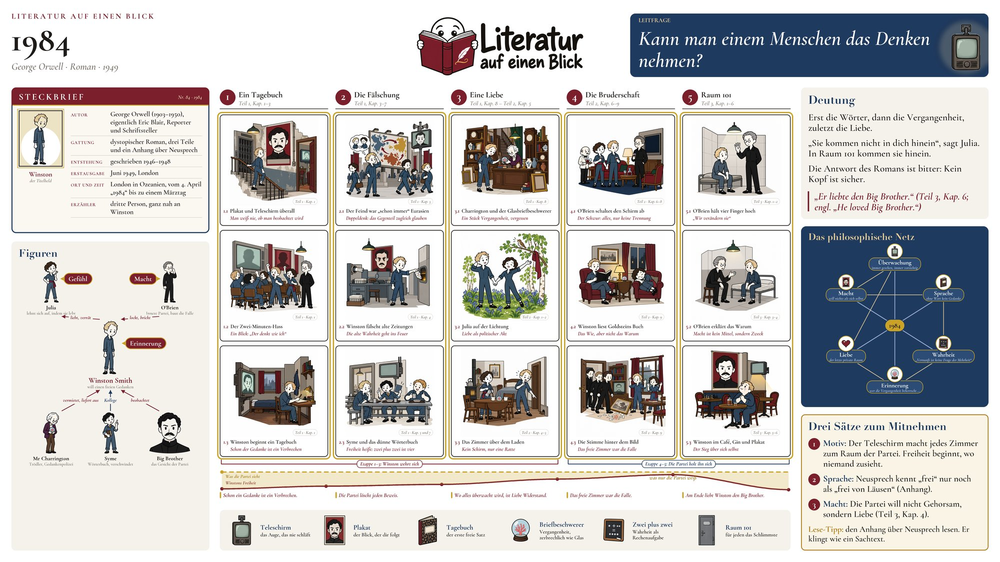

Literatur auf einen Blick
1984
George Orwell · Roman · 1949
LeitfrageKann man einem Menschen das Denken nehmen?
Ein Mann will einen einzigen Gedanken haben, der nur ihm gehört. Doch in seiner Wohnung hängt ein Bildschirm, der zurücksieht. Kann man einem Menschen das Denken nehmen?
Das Lernplakat
Alles, was im Video entsteht, auf einem Blatt: die fünf Etappen der Handlung, die Figuren und ihre Beziehungen, die Symbole, die Deutung und drei Sätze für die Klausur.
Plakat herunterladen PNG · 9600 × 5400 px · 13.7 MB · für den Druck bis DIN A1 Kleinere Fassung JPG · 4800 × 2700 px · für Bildschirm und Tablet


Zum Lernen und für den Unterricht. Bitte unverändert weitergeben und den Kanal nennen.

Drei Sätze für die Klausur
- Motiv: Der Teleschirm macht jedes Zimmer zum Raum der Partei. Freiheit beginnt, wo niemand zusieht.
- Sprache: Neusprech kennt „frei“ nur noch als „frei von Läusen“ (Anhang).
- Macht: Die Partei will nicht Gehorsam, sondern Liebe (Teil 3, Kap. 4).
Deutung
Erst die Wörter, dann die Vergangenheit, zuletzt die Liebe.
„Sie kommen nicht in dich hinein“, sagt Julia. In Raum 101 kommen sie hinein.
Die Antwort des Romans ist bitter: Kein Kopf ist sicher.
„Er liebte den Big Brother.“ (Teil 3, Kap. 6; engl. „He loved Big Brother.“)
Die Handlung in fünf Etappen
- Ein Tagebuch Teil 1, Kap. 1–3
- Die Fälschung Teil 1, Kap. 3–7
- Eine Liebe Teil 1, Kap. 8 – Teil 2, Kap. 5
- Die Bruderschaft Teil 2, Kap. 6–9
- Raum 101 Teil 3, Kap. 1–6
Figuren
- Winston Smith will einen freien Gedanken
- Julia lehnt sich auf, indem sie lebt
- O'Brien Innere Partei, baut die Falle
- Mr Charrington Trödler, Gedankenpolizei
- Syme Wörterbuch, verschwindet
- Big Brother das Gesicht der Partei
Symbole
- Teleschirm das Auge, das nie schläft
- Plakat der Blick, der dir folgt
- Tagebuch der erste freie Satz
- Briefbeschwerer Vergangenheit, zerbrechlich wie Glas
- Zwei plus zwei Wahrheit als Rechenaufgabe
- Raum 101 für jeden das Schlimmste
Steckbrief
- Autor
- George Orwell (1903–1950), eigentlich Eric Blair, Reporter und Schriftsteller
- Gattung
- dystopischer Roman, drei Teile und ein Anhang über Neusprech
- Entstehung
- geschrieben 1946–1948
- Erstausgabe
- Juni 1949, London
- Ort und Zeit
- London in Ozeanien, vom 4. April „1984“ bis zu einem Märztag
- Erzähler
- dritte Person, ganz nah an Winston
Kapitel im Video
- 0:00 Einstieg
- 0:48 Der Bauplan
- 1:12 Etappe 1: Ein Tagebuch
- 2:30 Etappe 2: Die Fälschung
- 3:37 Etappe 3: Eine Liebe
- 4:48 Etappe 4: Die Bruderschaft
- 6:01 Etappe 5: Raum 101
- 7:38 Die Figuren
- 8:08 Symbole
- 8:29 Deutung
- 8:52 Das philosophische Netz
- 9:14 Drei Sätze zum Mitnehmen
- 9:42 Steckbrief
- 10:05 Das ganze Poster
Grundlage ist das englische Original von 1949; alle Zitate in eigener Übersetzung.
Wenn es dir nicht gut geht: Telefonseelsorge 0800 111 0 111, rund um die Uhr, anonym und kostenlos.